Run results/run-jev-halving-1.jsonl, first of three tries per photo. Overall score 23.4% (point benchmark v3 scoring).
Jev's box its middle (the point scored) answer-key point that was matched answer-key point missed
256 boxes for 83 objects · matched 38 (medium tolerance) · score 21.2% (try 0; the three tries: 21%, 24%, 23%) · 1269 requests, 10.6 s, $0.0467
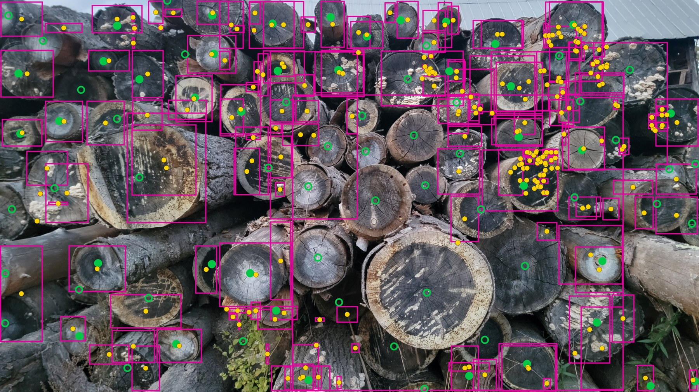
7 boxes for 11 objects · matched 4 (medium tolerance) · score 37.0% (try 0; the three tries: 37%, 37%, 47%) · 48 requests, 3.0 s, $0.0033
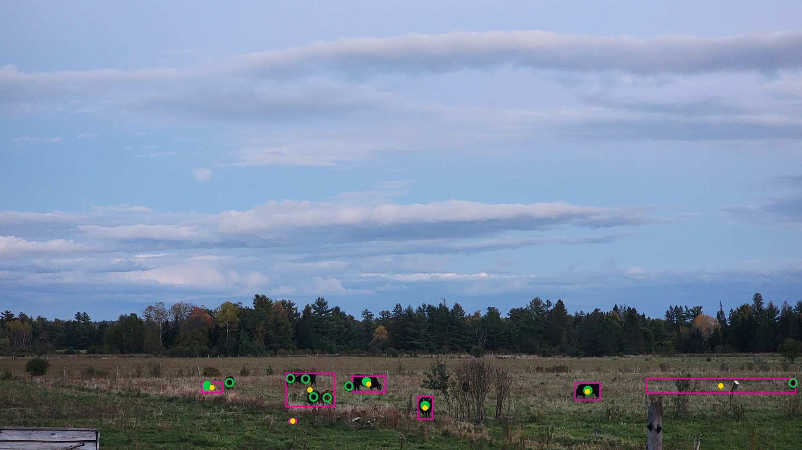
53 boxes for 33 objects · matched 15 (medium tolerance) · score 31.8% (try 0; the three tries: 32%, 37%, 32%) · 201 requests, 3.2 s, $0.0094
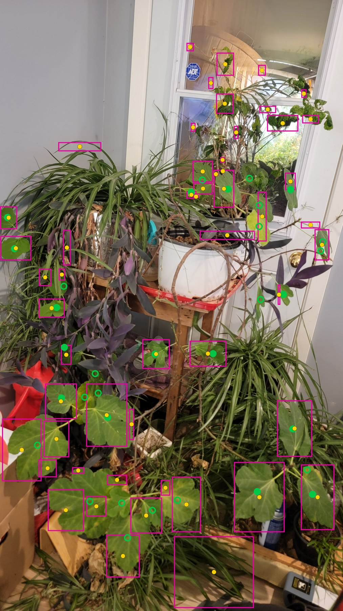
31 boxes for 26 objects · matched 2 (medium tolerance) · score 11.7% (try 0; the three tries: 12%, 15%, 11%) · 227 requests, 4.4 s, $0.0105
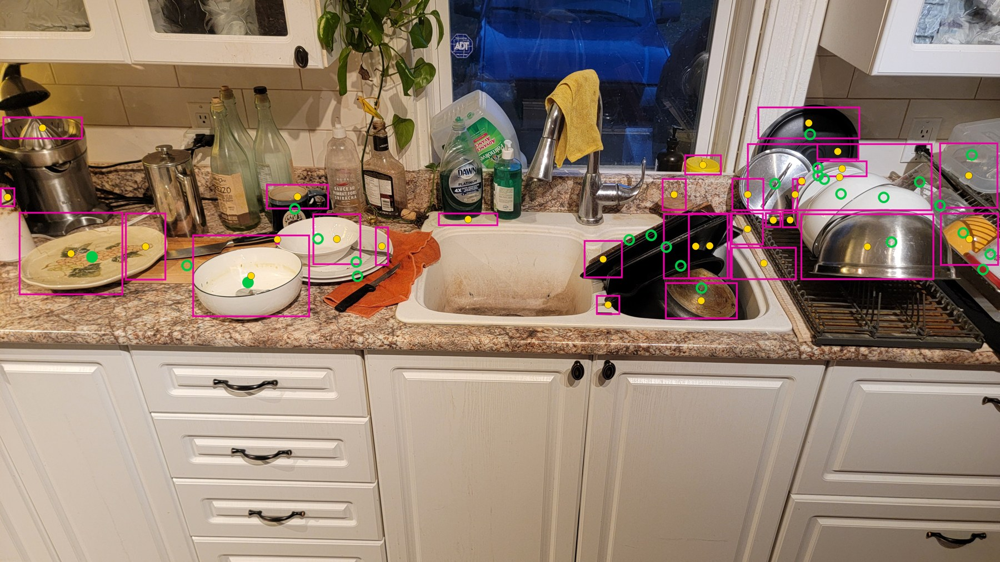
17 boxes for 13 objects · matched 5 (medium tolerance) · score 33.3% (try 0; the three tries: 33%, 41%, 35%) · 81 requests, 2.2 s, $0.0028
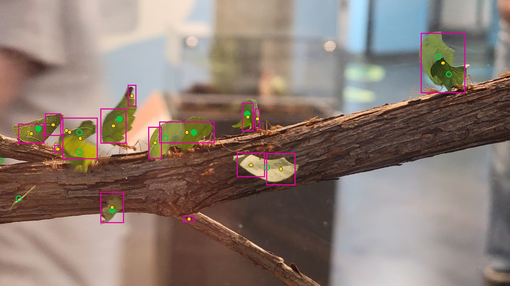
26 boxes for 22 objects · matched 8 (medium tolerance) · score 31.9% (try 0; the three tries: 32%, 32%, 37%) · 67 requests, 1.6 s, $0.0022
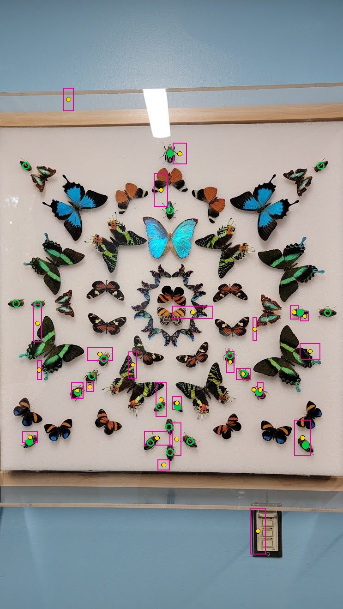
31 boxes for 16 objects · matched 3 (medium tolerance) · score 9.9% (try 0; the three tries: 10%, 19%, 21%) · 237 requests, 3.3 s, $0.0072
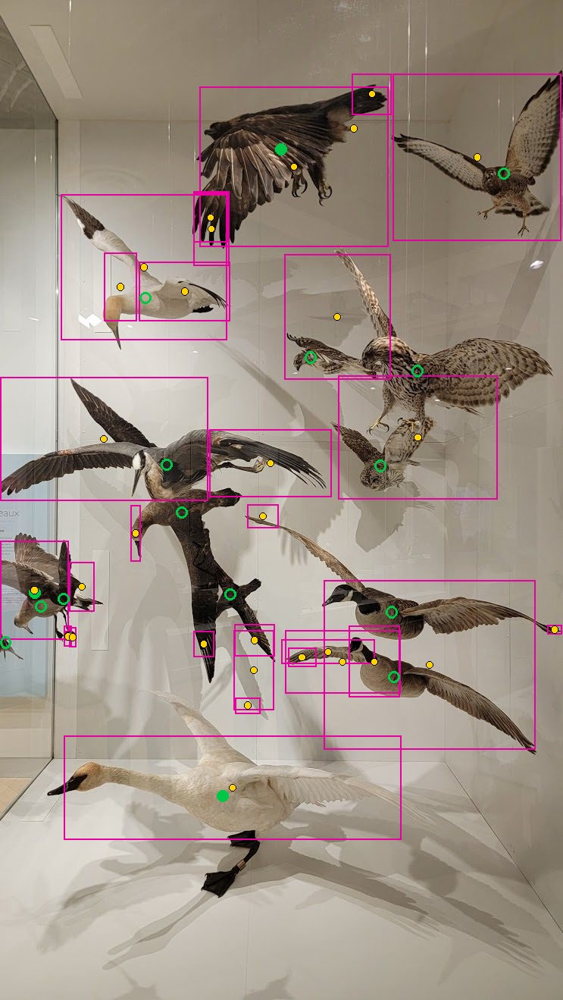
34 boxes for 14 objects · matched 5 (medium tolerance) · score 19.4% (try 0; the three tries: 19%, 22%, 29%) · 238 requests, 3.4 s, $0.0075
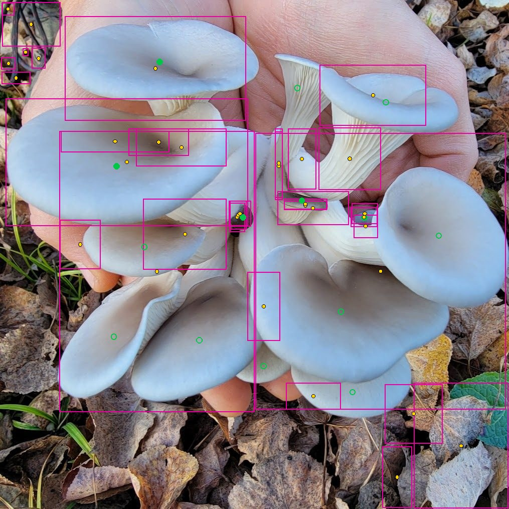
8 boxes for 6 objects · matched 1 (medium tolerance) · score 9.5% (try 0; the three tries: 10%, 22%, 17%) · 21 requests, 0.8 s, $0.0007
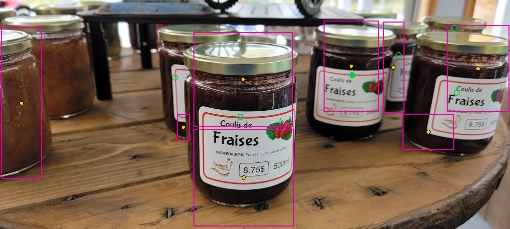
15 boxes for 37 objects · matched 4 (medium tolerance) · score 19.2% (try 0; the three tries: 19%, 25%, 20%) · 48 requests, 1.1 s, $0.0016
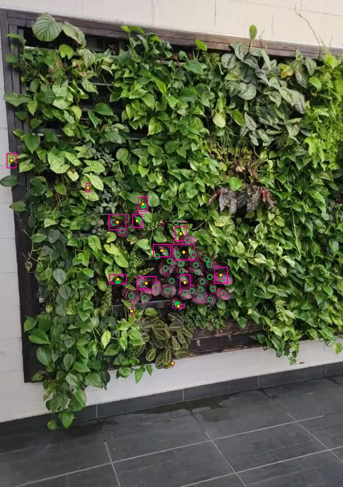
1 boxes for 1 objects · matched 0 (medium tolerance) · score 0.0% (try 0; the three tries: 0%, 0%, 0%) · 1 requests, 0.1 s, $0.0001
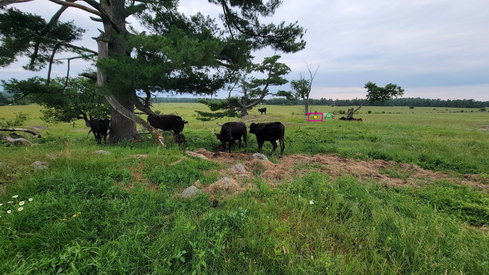